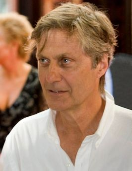
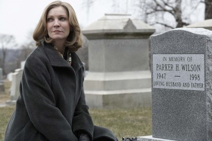
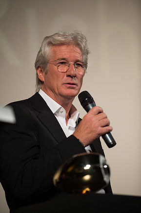
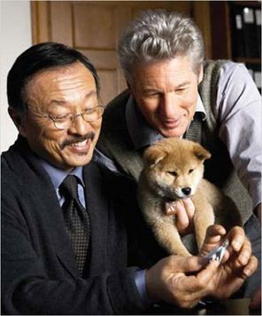
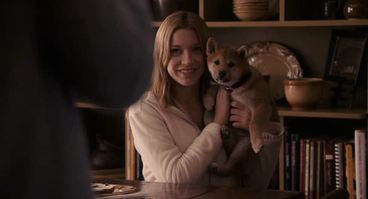
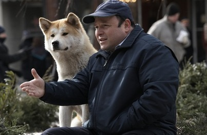

Lasse Hallström nació el 2 de junio de 1946 en Estocolmo, Stockholms län, Suecia, Lars Hallström. Es director y escritor
Joan Allen nació el 20 de agosto de 1956 enRochelle, Illinois, en cuya universidad The Eastern Illinois University conoció aJohn Malkovich, quien la invitó a ir aChicago para sumarse a laStteppenwolf Theatre Company con la cual Joan estrenó And a Nightingale
Gere nació en Filadelfia (estado de Pensilvania), de padres de ascendencia angloirlandesa. Graduado del High School of North Syracuse Central en 1967, se licenció ganando fama como músico experto en trompeta, compositor amateur y gimnasta
En la televisión es conocido por haber participado en series como Star Trek: The Next Generation,Encounter at Farpoint(1987)
Comenzó como modelo a los 15 años, destacando por su atractivo. Actualmente reside enLos Ángeles. Saltó al cine en 2006, a los 22
El talento de Jason Alexander se expande por todo el medio artístico. Alexander empezó a entretener a sus compañeros a una temprana edad para que de esa manera no lo molestaran por su obesidad.
